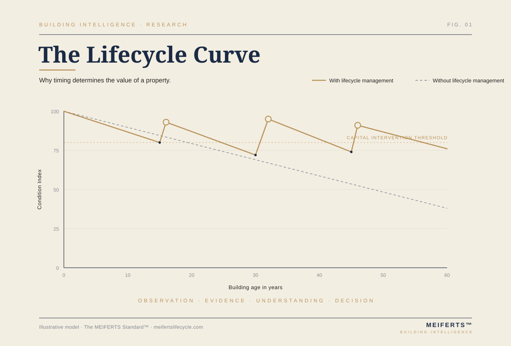

Purpose
To identify technical conditions that may influence risk, negotiations, ownership strategy and future capital expenditure.
MEIFERTS translates building complexity into decision clarity. We analyse buildings as technical systems, identify risk, structure future capital expenditure and turn technical findings into actionable decision support.
Most technical risk develops quietly. Maintenance is deferred, systems age, documentation becomes incomplete and capital expenditure accumulates. The value of technical due diligence lies in recognising this process before a decision is made.

The methodology transforms inspection inputs into a structured decision document. Each step exists to reduce uncertainty and make technical complexity usable for buyers, investors and owners.
The MEIFERTS methodology does not begin with opinion. It begins with evidence. Buildings generate evidence through age, condition, documentation, maintenance culture and visible deterioration. The methodology translates this evidence into understanding, risk and decision confidence.
Buildings generate evidence.Observations, documents, measurements and maintenance records create the factual basis.
Evidence creates understanding.Technical findings are interpreted within lifecycle, climate, use and governance context.
Understanding creates confidence.Priorities, risk categories and capital horizons reduce uncertainty.
Confidence enables better decisions.The report turns technical complexity into a usable investment decision.
To identify technical conditions that may influence risk, negotiations, ownership strategy and future capital expenditure.
Building envelope, roof, façade, moisture pathways, structure, MEP systems, common areas, documentation and maintenance culture.
A structured decision document connecting observed conditions with risk, lifecycle stage, CAPEX implications and recommendations.
Technical observations become useful only when they are prioritised. The Building Risk Score™ translates visible and documented evidence into risk levels that support negotiation, further investigation or purchase decisions.
The score is not a promise of certainty. It is a structured way of comparing technical uncertainty before commitment.
Remaining useful life, deferred maintenance, replacement cycles and the interaction between building systems determine whether an asset is stable, mature or capital intensive.
CAPEX forecasting connects the technical condition of a building with future expenditure horizons. It helps buyers and owners understand whether a decision requires immediate action, medium-term reserves or long-term strategic planning.
Property type: high-rise condominium. Building age: 14 years. Observed conditions included early façade joint ageing, local moisture indications, incomplete maintenance documentation and visible stress on selected common-area MEP components.
Proceed only after documentation review, façade maintenance confirmation and CAPEX reserve assessment. The asset remains potentially investable, but the decision should reflect medium-term lifecycle obligations.
A MEIFERTS report connects technical findings with investment meaning. It does not merely document what was seen. It explains what matters, what may cost money and what should be decided before commitment.
How age, intervention timing and maintenance culture influence long-term performance.
Why technical conditions must be translated into capital horizons before decisions are made.
How local climate, materials and moisture pathways change building risk over time.
Long-form publications that explain technical due diligence, lifecycle thinking and real estate decision quality.
Research notes and methodology papers defining The MEIFERTS Standard™ over time.
The long-term platform connects reports, research, client workspaces, downloads, learning material and project documentation. It is designed to become an operational environment for building intelligence rather than a static website.
The platform uses one editorial language per version. The English homepage now communicates entirely in professional institutional English. German content belongs to the German version, while product names such as Technical Property Review™, Building Risk Score™ and CAPEX Forecast™ remain part of the MEIFERTS product system.
The Decision Framework™ explains how inspection inputs are transformed into a decision document. The purpose is to make technical complexity comparable, prioritised and usable before a transaction or capital decision is made.
Decision Support Report for acquisition review, technical risk interpretation and medium-term CAPEX planning.
Research should demonstrate expertise rather than announce future content. Each note should explain one technical issue, why it matters for decisions and how it connects to lifecycle, risk or capital expenditure.
Technical due diligence, ownership risk, lifecycle and decision support for international buyers.
A methodology paper defining the Building Intelligence approach.
How building ageing and capital expenditure influence investment decisions.
Evidence-based interpretation of moisture risk in residential buildings.
MEIFERTS is structured as a Building Intelligence ecosystem. Reports, research, publications, academy modules and client workspaces are connected layers of one platform.
Describe the property, location and decision context. MEIFERTS will help define the appropriate technical review depth.